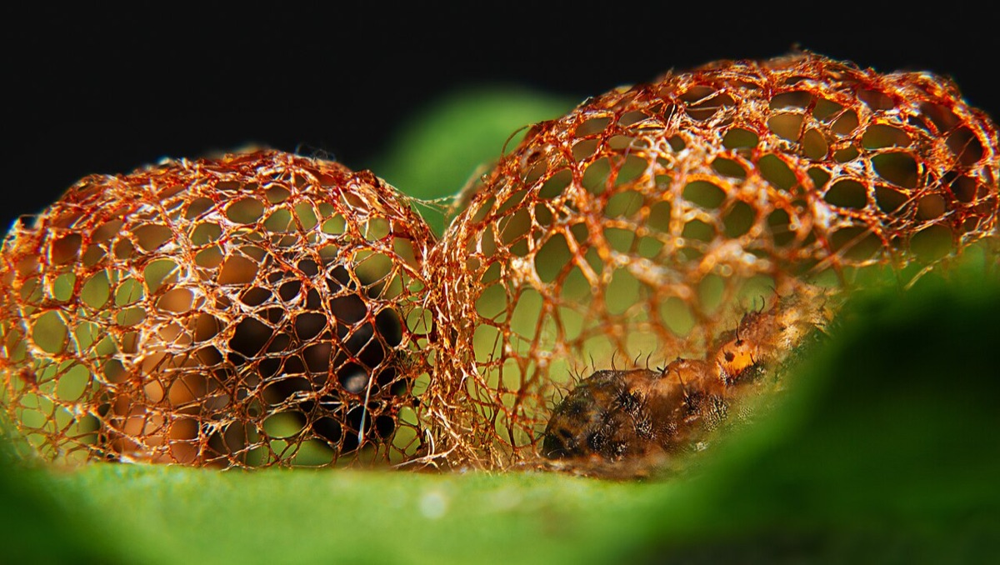
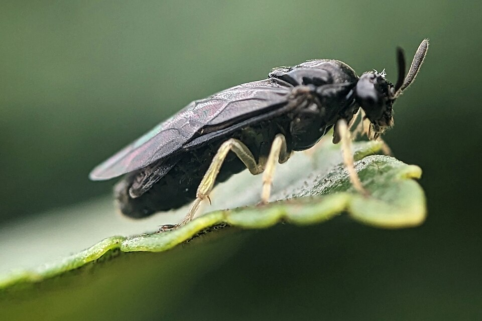

Elm Zigzag Sawfly
Aproceros leucopoda


- Also called
- EZS
- Kind
- insect
- Legal status
- First observed in Vermont in 2023 (FPR 2023 report). (checked 2026-10-30)
- Look-alikes
- Adult elm sawfly (metallic blue; smoky-gray wings with a yellowish or white spot at the wing base)
Names
Elm zigzag sawfly (EZS), Aproceros leucopoda. A small sawfly (a wasp relative) whose larvae eat elm leaves; new to the United States.
Range
Observed for the first time in Vermont in 2023. Initial confirmation came from samples at the Missisquoi National Wildlife Refuge in Swanton; feeding was later noted in Alburgh, Burlington, Colchester, Essex, Highgate, Milton, North Hero, Sheldon and South Hero (FPR 2023). It is present as far south as Virginia; research into its biology continues.
How to identify (by season; look-alikes and the key difference)
- Hosts: nearly all elms, including American elm and Dutch-elm-disease-resistant cultivars; treat every elm as a possible host.
- Eggs: laid singly along the tips of leaf teeth, up to 60 per female, hatching within eight days.
- Larvae: the zigzag feeding pattern in a leaf is the clue; see the calendar.
- Adults: small (7 to 8 mm), shiny black with a white patch under the thorax, yellow-white legs with white tips and smoky-brown wings. The look-alike adult elm sawfly is metallic blue.
- Cocoons: summer cocoons are loose and light, on leaf undersides, branches or shoots; overwintering cocoons are dense and lie in the duff and leaf litter.
Through the year
Dates are typical for Vermont and shift with elevation and year; "approximate" means the source gave a season and the dates are a translation of it.
| When | What | Look for | What to do | Dates |
|---|---|---|---|---|
| May 1 to Oct 31 | larval-feeding (watch) | Larvae feed on elm leaves from May to October. Young larvae (about 2 mm, grayish-white) eat a zigzag pattern into the leaf; older larvae (10 to 11 mm) are green with a black head band and T-shaped brown or black marks, and eat more broadly, leaving thick veins. | For a small number, remove by hand; report it through VTinvasives. | stated |
Habitat and spread
Moves with elm plants, their soil and leaf litter, and on equipment.
Damage
Heavy defoliation, noticeable on large elms; branch dieback that can weaken and kill trees after repeated years. Early infestations can go unnoticed for a long time.
Control (by method, timing, follow-up, what not to do)
- Small populations: remove by hand.
- Heavy infestations or large trees: a general-purpose insecticide labeled for trees and shrubs, applied in spring as soon as larvae are present; the page warns it also kills other insects.
- Slowing the spread: limit moving elm plants; inspect plants and their soil and leaf litter; clean equipment; destroy elm pruning and felling debris.
- Report through the VTinvasives "Report it" page; the page gives no species-specific steps.
Sources
- Vermont Invasives, Elm Zigzag Sawfly: https://www.vtinvasives.org/invasive/elm-zigzag-sawfly
- Vermont FPR, Forest Insect and Disease Conditions in Vermont 2023: https://fpr.vermont.gov/sites/fpr/files/documents/2023%20Conditions%20Report.pdf
Vermont Woodland Owner's Reference, built 2026-11-10. Rules and dates here are summaries, not legal advice; dates shift with elevation and year. Photo and recording credits · The text is by Loop Works, CC BY 4.0 (pictures and recordings keep their own licenses)